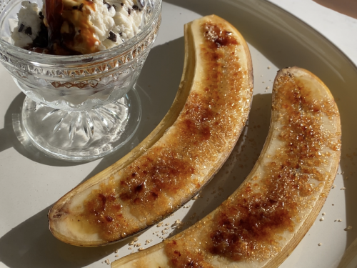
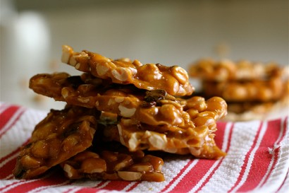

Elvis tarts
Peanut butter, banana and caramel tarts inspired by the famous sandwich of choice of our greatest tv murderer.

- Prepare tartlets and infused rum.
- Flambe 6ozs of infused rum in a saucepan, reduce by 1/4 to 1/3, add 1 oz of dark maple syrup and cool. Seperate in 1/2.
- Prepare brittle.
- Prepare caramel sauce.
- Fill tartlet shells with 1/2 inch layer of caramel sauce. Brulee bananas, add layer on top of caramel sauce, cover in rum reduction.
- Cover bananas in caramel sauce until just shy of the top of your tartlet shells.
- Make whipped cream, adding a pinch of salt, scoop of sugar and other 1/2 of rum reduction.
- Top tartlets with whipped cream, stick good-sized piece of brittle on top.
